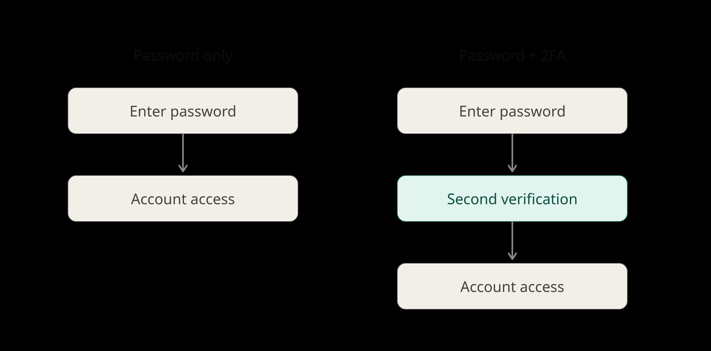
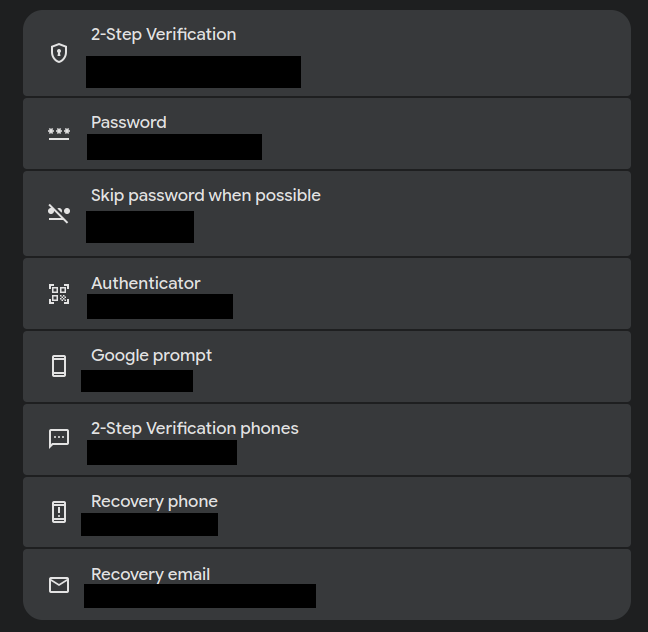

Protecting yourself online does not have to be complicated, and that is the aim of this series.
TLDR: 2FA is a sign-in security measure that requires you to prove your identity two different times when you sign in to any online account (e.g., Facebook, Gmail), and it can significantly reduce the chances of a digital catastrophe, so enable it on all of your accounts if you care about security.
If someone approached me and asked, "How do I protect myself online?" my gut instinct would be to tell them about enabling two-factor authentication (2FA) on all of their online accounts, full stop.
Why? 2FA gives people peace of mind when it comes to their online accounts because it adds another sign-in layer on top of your general sign-in screen and account password. That way, if a bad actor gains access to your sign-in credentials, they will be unable to sign into your account without going through the extra layer that is 2FA. It also takes less than five minutes to configure, which eliminates the time excuse.

Here's what to expect. A regular sign-in session will ask you for a username or email and a password. If it matches, you're signed in. Yay!
With 2FA enabled, the basic sign-in credentials are not enough. Once your initial sign-in succeeds, you will be greeted with a second sign-in. Depending on the method of authentication, it can take anywhere from a few seconds to a minute.
2FA exists in many forms; it can be as simple as a code sent to a cell phone via text, a backup code sent via email, or a code sent by a third-party authenticator app like Proton Authenticator (my personal favorite). The cool thing is the user can select which form of authentication suits them best. I enjoy using a dedicated authenticator app due to its speed, ease of use, organization, and ability to store codes for multiple different accounts.

The only real downside is a few extra seconds at sign-in.